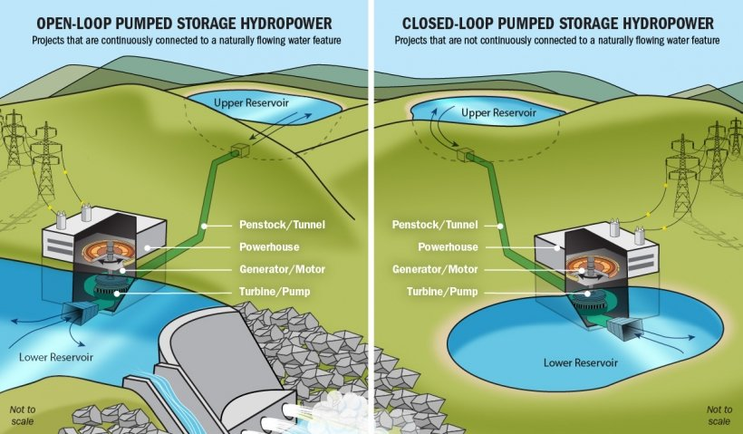

Mokelumne Project Notes
Pumped storage hydropower (PSH)
The D.O.E.’s Water Power Technologies Office (WPTO) does R&D to understand and assess value of potential benefits of existing and prospective PSH (e.g., the HydroWIRES Initiative for grid reliability, resilience, and integration). From their website:
- PSH is a type of hydroelectric energy storage technology, energy storage is a critical source of grid system flexibility, and most stored energy is PSH
- PSH is the most dominant form of long duration energy storage on the electric grid today, accounting for 93% of all utility-scale energy storage in the US (Uría-Martínez et al. 2021)
- U.S. PSH fleet = 42 plants, 22 GW of generating capacity, 550 GW hours of energy storage
- 6% of electricity in the US = hydropower (28.7% of renewables)
- Cited as a key player in creating a clean, flexible, and reliable energy grid
- historically, energy was stored at night (more efficient to keep nuclear or coal running to be released the next day in predictable cycles)
- As more wind and solar become available, PSH can integrate the indeterminacy and seasonality of variable renewable (can’t forecast the sun a wind a year out…)
- without storage, cannot provide power without using gas backups
- <4 hours = batteries
- >4 hours = PSH
Key benefits of PSH:
- PSH is only commercialized technology for long-duration storage
- support large volume of solar and wind
- provide storage capacity to reduce curtailment during oversupply
- provide inertia to stabilize grids
- reduce need to operating coal/gas reserves
- provide black start capability
How it works
Water is pumped from a lower reservoir to an upper reservoir in times of high electricity supply (sun for solar panel / wind for mills) and/or low demand. During times of low supply and/or high demand, water from the upper reservoir is released into the lower reservoir, generating electricity as it moves through a turbine.
- operates like a conventional hydropower plant, but it can reuse water over and over
- at times of low demand when electricity prices tend to be lower, water is pumped from a lower reservoir to an upper reservoir, and then released at times of high demand to drive a turbine and generate electricity

- Open-loop PSH has an ongoing hydrologic connection to a body of water, while with closed-loop PSH, reservoirs are not connected to any outside body of water
- Off-river PSH (closed loop) are not designed to capture water beyond the initial reservoir fill so there is minimal impact on natural stream flows

International Forum on PSH
Founded by International Hydropower Association & U.S. DOE. in 2020, the IFPSH initiative focused on guidance and recommendations for pumped PSH, to develop solutions and share BPs to deliver power and mitigate climate change. Co-chaired by Malcom Turnbull, former Australian Prime Minister, and Kelly Speakes-Backman, Acting Assistant Secretary for Energy Efficiency and Renewable Energy at the U.S. Department of Energy
Key takeaways from the ISPSH:
- once selected, the PSH project should be managed to avoid, minimise and mitigate social and environmental impacts
- emerging innovations across three broad categories:
Furthering PSH potential: install at old mines, underground caverns, non-powered dams and conventional hydropower plants, as well as location agnostic underground PSH, off-river PSH and seawater PSH, represents vast untapped potential
Retrofitting and upgrading PSH systems: latest technological advancements, such as the use of variable speed pump-turbines and hydraulic short circuit, can enhance the services provided by existing PSH
Developing hybrid systems: coupling PSH with batteries, floating solar PV, heat storage and desalination can provide additional services with reduced costs and environmental impacts
The urgent need for long duration storage is beginning to be recognized:
- April 2020 - EU Taxonomy of Sustainable Finance recognized all types of PSH as making a substantial contribution to climate change mitigation
- June 2021 - International Energy Agency published a comprehensive hydropower marketreport calling for the expansion of pumped storage hydropower
- July 2021 - British government issued a call for evidence to better understand the barriers in place and how they may be addressed
- September 2021 - Chinese government set a new target for 120GW of PSH by 2030, which represents a fourfold increase in less than a decade
Demand and trends
PSH was first used in Italy and Switzerland in the 1890s, by the US by 1930, and is now used worldwide. However, new PSH faces many challenges (licensing, remunerate services), so little development over the past 30 years.
The figure below shows that whilst there is a sizable pipeline under development / permitting, most PSH under construction is in East Asia, principally China.

General Notes
- a lot of recent literature - seems to be a very hot topic
Knowledge gaps
Impacts and co-benefits
- operational chnages to acheive low impacts and benefits
- entry / exist point
- floatovoltaics
Glossary
PSH: pumped storage hydropower (US)
PHES: pumped hydro energy storage (AUS)
IHA: International Hydropower Association
Bluefield PHES use an existing reservoir to make a PHES pair
Greenfield PHES use two new reservoirs.
storage power capacity:
storage energy volume:
head:
load: electricity demand
Evaporation suppressors: small plastic objects floated on a reservoir to reduce wind speeds and evaporation rates
curtailment: when the sun shines and the wind blows more than is demanded
- a system operator deliberately reduces the supply of electricity in order to balance the grid. Where storage does not exist, this means that renewable electricity is wasted and not stored for potential use in future
variable energy: power output rises and falls in response to, e.g., sun and wind